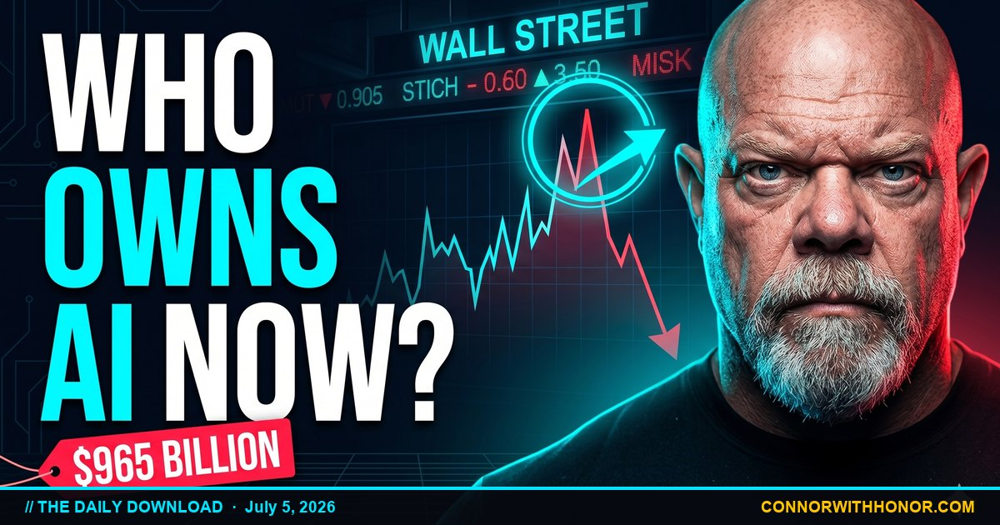

The Invitation Nobody Sent
July 5, 2026 // Daily Download // Connor MacIvor
Five separate stories crossed my desk this week, from five different worlds. A government program. A materials lab. A pile of battery data. A car company. A room full of medical researchers. On the surface they have nothing to do with each other. Underneath, they are the same story told five times, and once you see the shape you cannot unsee it.
The shape is this. For most of history, the newest and most powerful tools showed up first in the hands of the people who were already ahead. The wealthy got the head start, sometimes a full generation before anything trickled down to the rest of us. This week, in five different ways, that pattern cracked. The tools that used to live inside labs, boardrooms, and gated neighborhoods started showing up in regular driveways, regular kitchens, and regular bank accounts. I walked this same crack in the locked rooms are opening, and this week it widened.
The Invention Machine Got Faster
Start with the one that sounds like science fiction and is not. A research effort used artificial intelligence to screen more than two million candidate materials in roughly a single day of computer time, and flagged a handful of promising new superconductors, with early lab work backing some of them up. This is early-stage science, not something on a store shelf. But the number is the story. Two million, in a day.
A superconductor is a material that carries electricity with almost no waste. No heat bleeding off the wires, no energy leaking out the sides. It is the holy grail behind power lines that do not lose power, motors that run cooler, batteries that do more with less. For a hundred years, finding a new one meant a scientist guessing, mixing, testing, and mostly failing. Years of dead ends for one maybe. A machine just ran millions of those guesses before lunch.
Here is why that reaches your life and not just a science journal. Almost everything you own that plugs in, charges, or runs on a motor is limited by the materials inside it. When better materials get cheaper to find, better everything gets cheaper to build. Your electric bill. Your car. The cost of cooling a hospital. Even the cost of running the AI itself. When invention speeds up, the price of the physical world starts to drift down. Not this year, and I am not going to pretend otherwise. But the wheel is turning faster than it ever has, and this is the same current I traced in the robot that builds itself. The people who understand that early stop being surprised by their own future.
A Newborn Just Got A Stake
Now the one that lands closest to a kitchen table. A new federal program seeds eligible newborns with $1,000 placed straight into the market and tracked through an app. Not a check to spend. Not a card in a birthday envelope. Ownership, set to grow. It is early and the rules are still settling, so treat the fine print as a work in progress. The idea underneath it is not.
A thousand dollars is not a fortune, and I would never insult you by pretending it is. But money invested the day a person is born does not stay a thousand dollars. It compounds for eighteen years before that kid can even drive. It grows while they crawl, while they learn to read, while they walk a graduation stage. Time in the market is the exact ingredient wealthy families always had and working families never got handed for free. Now the clock can start on day one for a kid whose parents never owned a share of anything.
Set that next to something else happening quietly. A wave of the wealthiest families is reportedly moving their kids out of ordinary schools and into new academies built around the world of 2040, not 1940. Whether or not every detail holds up, the direction is clear enough: the people with information are repositioning their children for what is coming, and they are doing it early. The seeded account is the first time the rest of us got invited to do a smaller version of the same thing. That is the whole game. You position early, or you get positioned by someone who did.
I deploy AI in real businesses every day, in real estate and voice systems and small shops that never had a tech budget. The pattern never changes. The people who win are not the smartest in the room. They are the ones who moved before the door closed. A thousand dollars per kid is a small door. It is open. And most families will walk right past it, because nobody sat at their table and explained why it matters. That is the job I signed up for, and it is the same argument I made in AI for everyone, not just the wealthy.
Your Car: One Fear Died, One Trade Arrived
Your driveway had two stories this week, and they cut in opposite directions. Take the good one first. For years people were told to fear the electric car battery. It would die young, cost a fortune to replace, and strand you on the shoulder with a dead brick and an empty wallet. That fear kept millions of buyers parked. New long-term data on those batteries, after hundreds of thousands of real-world miles, keeps coming back better than the doomsayers promised. Plenty of packs kept going long past the point critics swore they would quit.
Notice how often that happens. We get handed a fear. We build an entire decision around dodging it. And the fear turns out to be mostly smoke. The people selling the panic were not always lying, sometimes they just did not know, but the cost of believing them was real: years of not buying, not switching, not saving, over a worry that never arrived. It shows up all over the AI world too. People are terrified of tools they have never once touched, convinced they are too old, too late, too non-technical. The fear costs them far more than the tool ever would. The battery lesson is the AI lesson. Test the fear before you let it run your life.
Now the trade that cuts the other way. A major electric carmaker has reportedly floated asking your car to scan your face before it will drive itself, and gamifying it, with streak days and little rewards for letting the machine watch you, over and over, like a game on your phone. Self-driving is one of the most powerful gifts technology can hand a regular person. Picture the veteran who cannot drive anymore, the grandmother who lost her license, the exhausted parent working a double. Freedom on wheels for people who lost it or never had it.
The price of that freedom is a camera pointed at your face, learning you, tracking you, turning your own attention into a streak you feel guilty breaking. That is the digital version of being asked to unlock your front door every single day and leave the key in the lock. It feels convenient right up until you ask who else holds a copy. I am not telling you to refuse it. I am telling you to know the trade before you make it. Convenience is never free. It is paid in data, and the bill arrives quietly, in the background, where you cannot see it. Ask the one question they hope you skip about every tool that touches your life: what am I giving up, and who gets it? Ask that, and you are already ahead of most of the people around you.
The Most Advanced Science Points At Your Fridge
The last one lands on the thing that scares people most: their own body and their own mind. The fight against the disease that steals memory just turned a corner. There are now well over 150 experimental treatments being tested against it, across close to 200 trials. That number by itself is hope you can count.
The bigger story is where those treatments are heading. For years the whole field chased one theory, one villain it blamed for the disease. Billions spent, trial after trial, and most of it failed. So the scientists did the thing humans are worst at doing. They admitted the old road was a dead end and turned the wheel. The new focus is inflammation and the immune system, the body's own fire and its own defense. A whole new front in a war we had been losing.
And right alongside the high-tech medicine came something almost insultingly simple. An observational study linked eating eggs a few times a week with a meaningfully lower risk of that same disease. Not a miracle, not a cure, and not a prescription from me. A nudge you can act on from your own refrigerator. The most advanced research on the planet and the carton of eggs in your fridge are aimed at the same target: protect the brain. For once, the everyday person is not locked out of the strategy. You do not need a lab. You need a decision.
Your Move This Week
Reading about the door opening does nothing if you never walk through it. So here is the part the video does not give you: five small, concrete moves, one per story, that a regular person can actually make in the next seven days.
- The seeded account: If you have a newborn or one on the way, spend twenty minutes finding out whether your child qualifies and what you have to do to claim it. Then set a recurring reminder to add even a little every year. The account is the seed. Your habit is the water.
- The invention machine: Pick one tool you have been afraid to try and actually open it this week. AI is getting cheaper every month for the same reason materials discovery is speeding up. The cost of trying has never been lower, and the cost of waiting compounds against you.
- The battery lesson: Write down one fear that has been steering a decision, money, a career move, a tool, a purchase. Then go test it against real data instead of the loudest voice. The battery survived. Most of your fears are smaller than you were told.
- The face-scan trade: Before you accept the next convenient upgrade, app permission, or connected feature, ask the one question out loud: what am I giving up, and who gets it? Say yes on purpose or not at all. Reading the bill before you sign is what staying free looks like now.
- The fridge move: Make one small choice this week that protects the brain you are going to need for another forty years. Eggs a few mornings, a walk, less of the engineered stuff. The frontier and the kitchen table are collapsing into the same place. Act like it.
None of these takes money you do not have. None of them takes permission from anyone at the top. That is the point. The line that used to decide who wins was how much money you had. The line now is how fast you move and how much attention you pay. That has never been true before, not like this.
Text AI Or HOUSE To (661) 400-1720
Want help putting AI to work in your own business the way California-sized budgets are putting it to work in theirs? Text AI. Thinking about selling a home in Santa Clarita and want your price set against the homes that actually closed, not a wish? Text HOUSE. Send either one to (661) 400-1720. That is my real cell, and a real human answers. If you would rather I reach out, drop your info in the form below. Selling here? My Fair Fixed Fee is a $17,000 all-in fixed fee, full service, disclosed up front, single agency, the same fee at $700,000 or $10 million.
Text (661) 400-1720 Sellers Only Agent- The AI lane: AI for everyone, not just the wealthy, the full case for why the good tools are finally reachable for the person with one truck.
- The access thread: The locked rooms are opening, on power leaking out of the places that used to keep it.
- The invention curve: The robot that builds itself, on machines that speed up the making of things.
- The money trap: The penny that buries you, on why small early moves decide big late outcomes.
The Daily Download in Your Inbox
Weekday morning AI news, weekly SCV real estate market deep-dives, and long-form essays when something needs to be said. No spam. Unsubscribe anytime.
FAQ
What is the new $1,000 account for newborns?
A new federal program seeds eligible newborns with $1,000 placed into the market and tracked through an app, so the money grows as investments rather than sitting as cash. It is early and the rules are still rolling out, but the shape is what matters: money invested at birth compounds for roughly 18 years before that child can even drive. Time in the market is the head start wealthy families always had. For the first time a version of it is being handed to regular families too.
Did an AI really discover new superconductors?
A research effort used AI to screen more than two million candidate materials in roughly a day of computer time and flagged a small set of promising new superconductors, with early lab work backing some of them up. It is early-stage science, not a product on a shelf. A superconductor carries electricity with almost no waste, so cheaper, better materials eventually mean cheaper, better versions of everything that plugs in, charges, or runs on a motor. The headline is not one material. It is that invention itself is speeding up.
Are electric car batteries actually reliable now?
Long-term data on EV batteries after hundreds of thousands of real-world miles keeps coming back better than the early doomsday predictions. Many packs held up well past the point critics swore they would fail. The batteries were not the whole story on the balance sheet, but the specific fear that they would die young and strand you turned out to be far smaller than people were told. The lesson travels: test a fear before you let it decide for you.
Is a car really going to scan my face to drive itself?
A major electric carmaker has reportedly floated asking drivers to scan their face to confirm identity before certain self-driving features engage, and gamifying it with streaks and small rewards for doing it day after day. Self-driving can be a genuine gift, especially for a veteran who can no longer drive or a grandparent who lost a license. The trade is a camera learning your face and habits. Convenience is not free, it is paid in data, and the smart move is to know the trade before you accept it, not after.
What changed in the fight against memory loss?
There are now well over 150 experimental treatments being tested against the disease that steals memory, across close to 200 trials, and the direction is shifting. For years the field chased one theory and mostly failed. Researchers have turned toward inflammation and the immune system as a new front. Alongside that, an observational study linked eating eggs a few times a week with lower risk of the same disease. It is not a cure, it is a nudge you can act on from your own refrigerator, and the everyday person is not locked out of the strategy.
What is the one thread through all five stories?
Power that used to live inside labs, boardrooms, and gated neighborhoods is starting to show up in regular driveways, kitchens, and bank accounts. A seeded investment account, a sped-up invention machine, a battery that outlived its fear, a self-driving trade worth reading, and a health finding you can act on from your fridge. The breakthrough is only half. The other half is a regular person knowing it exists and reaching out to take a share before the head start becomes a permanent gap.
That is where things stand on July 5, 2026. A seed in a newborn's account. A machine that invents before lunch. A fear that turned out to be smoke, and a trade worth reading twice. And the most advanced science on earth pointing back at a decision you can make in your own kitchen. None of this technology is neutral. It will either widen the distance between the people who have and the people who work, or it will close it, and that gets decided in living rooms like yours, not in a boardroom. The tools were built for the plumber, the nurse, the veteran, and the single mom too. Nobody mailed them the invitation. So we are the invitation. I'm Connor, with honor, at ConnorWithHonor.com. Reach for your share.